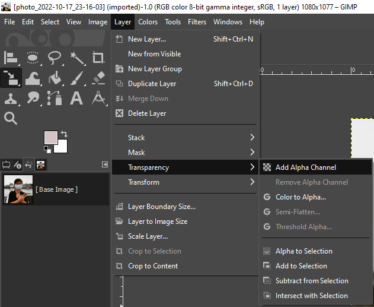
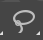
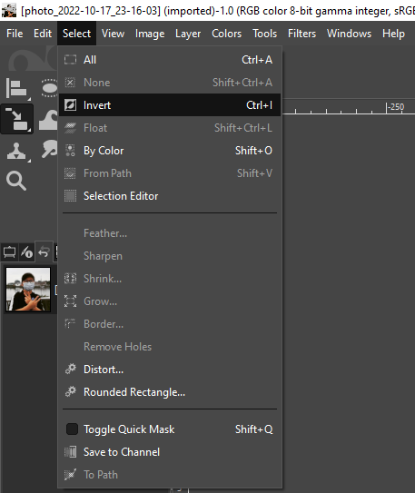
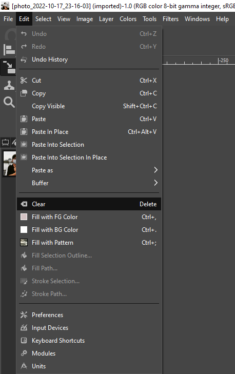
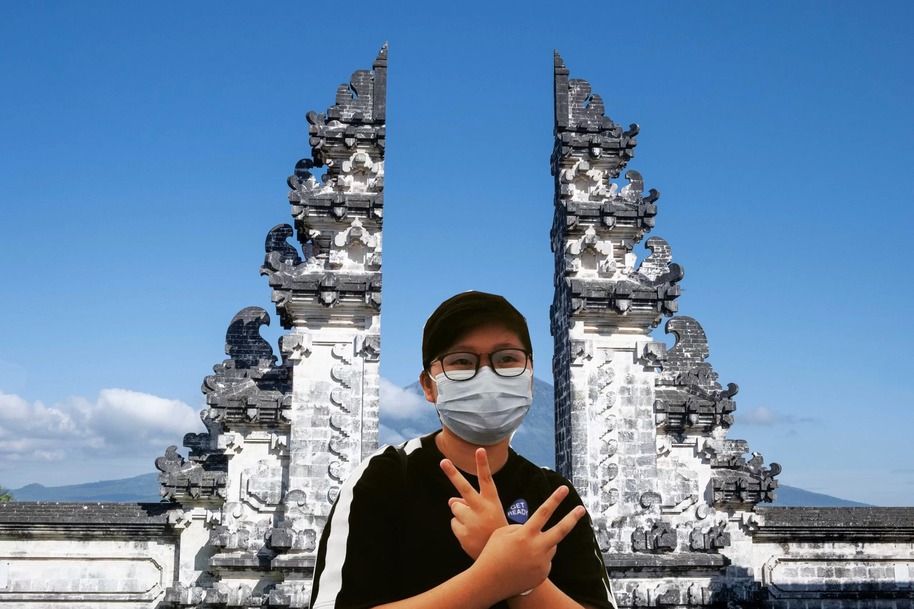

Using the software GIMP, I removed the background from picture A and replaced it with picture B. I refered to this video by gimp workshop found here.

Picture A

Picture B
Click Layer > Transparency > Add Alpha Channel.
Click Free Select Tool to outline the parts you want to keep, make sure the starting node is also the last node (closed off).
Click Select > Invert.
Click Edit > Clear. This should make the background transparent.
To change the background, just add in the picture of choice and the finished product should be something like this.
Using the software Inkscape, I was tasked to do create my own logo design for this blog. I created a vector image using this picture of a logo. I refered to this video by Logos by Nick found here here to complete this task.
Next, use the edit path tool to edit the the curves or lines where needed. You can move nodes or the lines itself. Once you are satisfied, just select the enclosed path area and choose the colour you would like to fill it with. To remove the outline hold 'shift' then click the cross (clear colour).
I created mine in colour and black & white they can be seen below.

Here, we will start the use of Autodesk Fusion 360 as our CAD software. We started learning the basics of CAD by learning how to sketch in Fusion 360. We touched simple sketch functions like lines, circles, rectangle, construction lines, measure, constraints and a few more. Fusion 360 is very similar to Autodesk Inventor that I had previously learnt in one of my year 1 modules.
We started off with exercise 1 which is a simple sketch as seen below. This involved the used of lines, rectangles and circles to complete as well as the trim functiom to make it look neater.
Next for exercise 2, we did a slightly tougher sketch which involved using circles, polygons and construction lines as well as contraints.
Lastly for exercise 3, we did a slightly more tougher sketch which involved using circles, construction lines as well as contraints and fillet which also include extrude command.